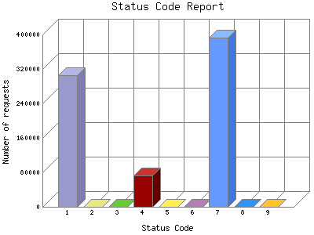

Analog 5.24
Analog 5.24 Report Magic for Analog 2.13
Report Magic for Analog 2.13The Status Code Report lists the HTML headers returned to the client from the server. For example a status '200 OK' means that the requested page or image was found and the server will now send it. A '404 Document Not Found' means that the requested page or image cannot be found on this server at the specified location. This can occur if the client mistyped a URL or clicks on a broken link. A complete list of the HTTP status codes can be found at HTTP Working Group.
This report shows all results. This report is sorted alphabetically.

| Status Code | Number of requests | |
|---|---|---|
| 1. | 200 OK | 306,149 |
| 2. | 206 Partial content | 226 |
| 3. | 301 Document moved permanently | 235 |
| 4. | 304 Not modified since last retrieval | 72,180 |
| 5. | 400 Bad request | 1 |
| 6. | 403 Access forbidden | 16 |
| 7. | 404 Document not found | 393,087 |
| 8. | 406 Document not acceptable to client | 1 |
| 9. | 500 Internal server error | 878 |
This report was generated on December 9, 2007 02:23.
Report time frame September 10, 2007 00:05 to December 9, 2007 05:55.
| Web statistics report produced by: | |
| Analog 5.24 | Report Magic for Analog 2.13 |